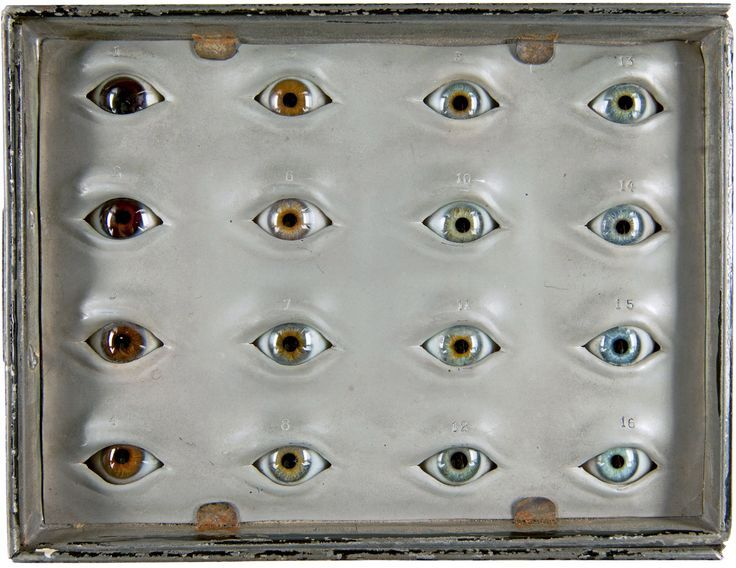
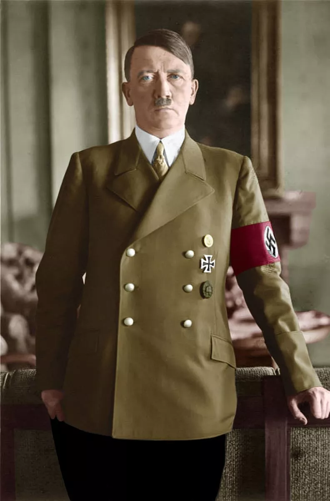
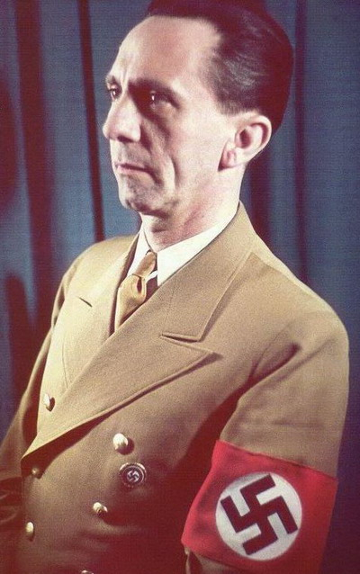
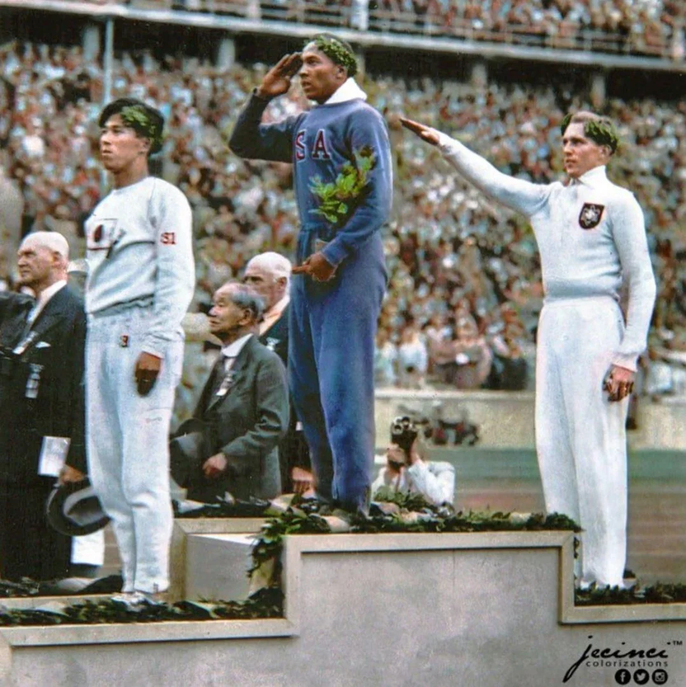

點擊上方的語言選單以切換語言
在 1930 年代的德國，一個人的命運不再由他的靈魂決定，而是取決於他是否擁有「金色的頭髮」與「碧藍的雙眼」。 納粹黨透過極端化的視覺標籤，宣稱只有符合這種特定樣貌的人才是「雅利安超人」。
然而，這場追求「純粹視覺」的運動，背後卻隱藏著深刻的科學荒謬與人性悲劇。
納粹宣傳中理想的雅利安人（Aryan）必須具備：金髮、碧眼、高大、長頭型。

註：納粹遺傳學家使用的物理測量工具。在當時，如果你的眼睛「不夠藍」，就可能被標記為血統不純。
納粹視為優越象徵的生理特徵，在現代科學眼中僅僅是基因的適應性變化。
人類虹膜中並沒有藍色色素。藍眼人是因為虹膜黑色素極少，光線進入後產生了瑞利散射（Rayleigh scattering）。研究發現，全球藍眼人可能都源自數千年前一個共同的基因突變祖先。
在陽光稀少的歐洲北部，淺色頭髮與皮膚有利於吸收更多紫外線以合成維生素 D。這是一種進化上的生存策略，而非智力或道德的優劣證明。
科學結論： 基因多樣性（混血）才是物種強韌的關鍵。納粹追求的「視覺單一化」，在生物學上反而會導致物種的衰弱。
最諷刺的是，瘋狂推崇金髮碧眼的納粹高層，自己往往都不符合標準。
| 人物 | 「理想雅利安」標準 | 實際生理特徵 | 視覺矛盾 |
|---|---|---|---|
| 希特勒 | 金髮、高大 | 棕髮、中等身材 | 身為元首，卻完全沒有他推崇的「金髮英雄」樣貌。 |
| 戈培爾 | 壯碩、戰士體魄 | 黑髮、身材矮小、足部殘疾 | 宣傳部長的生理狀態，在納粹優生法下甚至屬於「被改良」對象。 |
| 希姆萊 | 北歐勇士外貌 | 圓臉、高度近視 | 親衛隊首領更像是一名平庸的小公務員。 |


當時民間笑話：「真正的雅利安人應該像希特勒一樣金髮，像戈培爾一樣高大。」這直接點出了標籤的荒謬。
納粹的悲劇在於：當「金髮碧眼」變成唯一正解，剩下的德國人也活在恐懼中。
當時的「科學家」正用測量儀器對市民進行頭骨測量，將活生生的人簡化為數據。
1936 年奧運是希特勒展示「雅利安體質優越性」的舞台，卻被非裔選手傑西·歐文斯徹底粉碎。

歐文斯的勝利，是 20 世紀對種族偽科學最響亮的耳光。
現代影視持續拆解納粹的視覺執著：
無論是納粹的「金髮碧眼迷思」，還是我們上一篇文章討論的「黃種人」刻板印象，核心都是一樣的：用極簡的視覺標籤，掩蓋複雜的人性。
「真正定義你的不是眼球的顏色，而是你觀察世界的視角。」